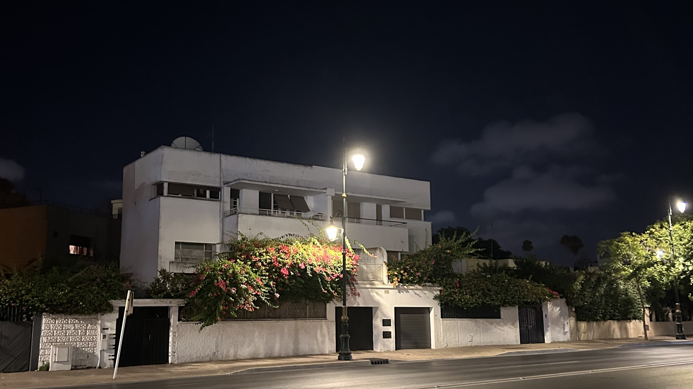

عاصمة الأنوار

The city was inescapable. It made my heart pound. Some days I couldn’t catch my breath. But on that last night I was grasping at it, trying to hold on to every image as the light and the dark slipped through my fingers.
The white walls overcome by bright flowers, the stray kitten curled up on the sidewalk so small I mistook it for a puddle of shadow, the proud flare of the streetlamps illuminating the rows of trees.
The next day, I would see a sign at the airport proclaiming Rabat “the city of light” and I would scoff. But it was me that night desperately trying to capture the glow of the moon over the wide city streets.
The aging ticket machine at the tramway wouldn’t accept my 20 dirham note that appeared even more ancient than the piece of junk itself, so I took it as an excuse to walk. I followed on foot the rails of the tram I would’ve taken, across neighborhoods, back to my fourth-floor apartment. As I walked, my love for the city startled me. It poured out of unknown places. It sprang up from the sidewalks covered in concrete spheres that valiantly attempt to prevent parking. It manifested from the clouds of cigarette smoke puffed by the cafe-lounging men with their staring eyes. It crashed into me in just the way I feared each bright blue taxi would every time I crossed the street.
Like all things, the night ended. I got back to my apartment. It was quiet. I was greeted by my host family’s cat, Luna. She looked up at me briefly before springing up to her habitual spot on my windowsill. The elegant metal bars seemed to have chosen their outward-curving shape just for her. She surveyed the street: the lights, the sidewalks, the trees. I don’t like cats. Still, I love Luna.